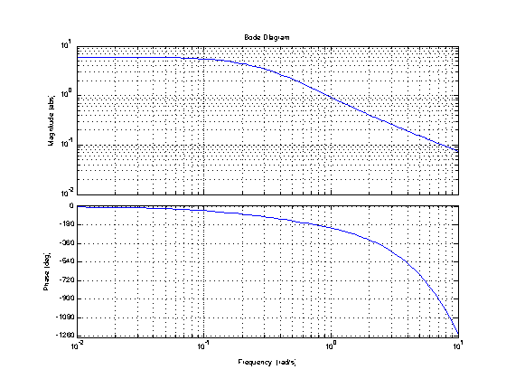
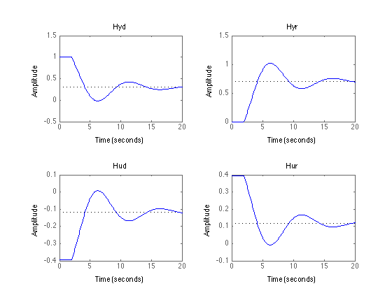

Problem 14.08
File: Ch14_P08.m
Prepare a Bode plot for the indicated transfer function (ignore the bit about Pade approximation). Compute the maximum proportional gain allowable for stable feedback control of this transfer function (with Ga = Gs = Gd = 1 in our model of the closed-loop). Simulate the closed loop step responses (Hyd, Hyr, Hud, Hur in our notation) for a value of the proportional control gain equal to have the critical value.
-------------------------- SOLUTION --------------------------
G = tf(6*[1 1],conv([4 1],[2 1]),'InputDelay',2);
Construct a Bode Plot
p = bodeoptions; p.MagUnits = 'abs'; p.MagScale = 'log'; bodeplot(G,p); grid;
Maximum proportional gain by the Bode stability criterion. The Matlab function margin returns the gain margin.
gm = margin(G);
displaytable(gm,'Maximum Proportional Gain = ');
Warning: The closed-loop system is unstable. Maximum Proportional Gain = 0.78845
Construct proportional control and simulate step responses.
K = tf([gm/2],[1]); Hyd = 1/(1+G*K); Hyr = G*K/(1+G*K); Hud = -K/(1+K*G); Hur = K/(1+K*G); t = 0:.1:20; subplot(2,2,1); step(Hyd,t); title('Hyd'); subplot(2,2,2); step(Hyr,t); title('Hyr'); subplot(2,2,3); step(Hud,t); title('Hud'); subplot(2,2,4); step(Hur,t); title('Hur');